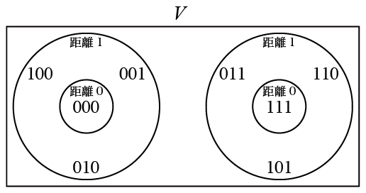

完全符号，不完全符号について，符号語を中心とする球と 全空間のベクトルの配置の例を示す．
最初の例は 3 回繰り返し符号である． この符号の生成行列とパリティ検査行列はそれぞれ \[ G =\left( \begin{array}{ccc} 1 & 1 & 1 \end{array} \right), \] \[ H =\left( \begin{array}{ccc} 1 & 1 & 0 \\ 1 & 0 & 1 \end{array} \right) \] であり，符号語は \[ C = \{000, 111\}, \] この符号のパラメータは，符号語長 $n=3$，最小距離 $d=3$，誤り訂正能力 $t = \lfloor(3-1)/2\rfloor =1$ である． $n=3$ なので全空間 $V$ の要素のベクトルは $3$ ビットの全パターン $8$ 個である．
この符号語の球と全空間 $V$ のベクトルの配置を示したものが図 12.1 である．

図12.1 3回繰り返し符号の符号語を中心とする球
各符号語を中心として距離 0 に符号語自身，距離 1 に各符号語からの ハミング距離が 1 のベクトルがある．どの符号語を中心とした距離 $t=1$ の 球にも属さないベクトルは存在しない．これが完全符号の特徴である．
次の例は 4 回繰り返し符号である． この符号の生成行列とパリティ検査行列はそれぞれ \[ G =\left( \begin{array}{cccc} 1 & 1 & 1 & 1 \end{array} \right), \] \[ H =\left( \begin{array}{cccc} 1 & 1 & 0 & 0 \\ 1 & 0 & 1 & 0 \\ 1 & 0 & 0 & 1 \end{array} \right) \] であり，符号語は \[ C = \{0000, 1111\}, \] この符号のパラメータは，符号語長 $n=4$，最小距離 $d=4$，誤り訂正能力 $t = \lfloor(4-1)/2\rfloor =1$ である． $n=4$ なので全空間 $V$ の要素のベクトルは $4$ ビットの全パターン $16$ 個である．
この符号語の球と全空間 $V$ のベクトルの配置を示したものが図 12.2 である．
図12.2 4回繰り返し符号の符号語を中心とする球
どの符号語を中心とする半径 $t=1$ の球にも含まれないベクトルが あるのがわかる．これが不完全符号の特徴である．また，球の半径が 誤り訂正能力である $t=1$ までであれば互いの球が排他的である （交わらない）が， 半径を $t+1$ の $2$ にすると図12.2 の両方の半径 $1$ の球に含まれていなかったベクトルがどちらの符号語を中心とする 球に含まれるため，排他的でなくなることがわかる．そのために $1$ ビットの誤りなら球の排他性からもとの符号語が一意に 決まるのに対し，$2$ ビットの誤りが起こるとどちらの符号語からも 同じ距離になるためにもとの符号語が一意に決まらない．
符号について，パッキング半径を以下のように 定義する．
$s$ を符号語を中心とする球の半径とすると 球が排他的である（交わらない）ような $s$ の最大値をパッキング半径という．
例 12.1
3 回繰り返し符号は図12.1 より $s=1$ までは球が排他的だが $s=2$ とすると符号語 $000$ を中心とする球に $011, 110, 101$ が含まれるようになり，符号語 $111$ を中心とする符号語の球と 共通の要素をもつようになる．このためパッキング半径が 1 であることがわかる．また，4 回繰り返し符号は 図12.2より $s=1$ までは排他的だが $s=2$ とすると符号語 $0000$ を中心とする球に $0011,0110,0101,1001,1010,1100$ が含まれるようになる．これらのベクトルは符号語 $1111$ を中心とする半径 $2$ の球にも含まれるので排他的でない． ことためパッキング半径が 1 であることがわかる．
（例終わり）
定理9
符号 $C$ のパッキング半径は以下の性質をもつ
例12.2
例12.1 で述べた通り 4 回繰り返し符号のパッキング半径は $1$ である． この符号の最小重み $d$ は $4$ であるから 誤り訂正能力 $t$ は $\lfloor(d-1)/2\rfloor=\lfloor(4-1)/2\rfloor=1$ であり，パッキング半径に一致している．
4回繰り返し符号の符号語長は $4$ である．
スタンダードアレイの手順でコセットリーダーを左に置いて
この符号のコセットを書き出すと
$\{0000, 1111\}$
$\{1000, 0111\}$
$\{0100, 1011\}$
$\{0010, 1101\}$
$\{0001, 1110\}$
$\{1100, 0011\}$
$\{0110, 1001\}$
$\{1010, 0101\}$
となる．重み $0$ のベクトル，重み $1$ のベクトルはそのコセットの
中で唯一の重み最小のベクトルであるから唯一のコセットリーダになる．
ところが重み $2$ のベクトル，例えば $1100$ はコセット内に他にも重み
$2$ のベクトルがあるので唯一のコセットリーダーになれない．
唯一のコセットリーダーになれる重みの最大値は $1$ で，
パッキング半径に一致している．
（例終わり）
証明
（1. の証明）$t = \lfloor(d-1)/2\rfloor$ とする． 定理2で，符号の最小重みが $d$ のとき， 符号語を中心とした半径 $t = \lfloor(d-1)/2\rfloor$ の球は排他的， すなわちすべて互いに重ならないことを示した． パッキング半径は球が排他性を保つ半径の上限と定義されている． $t$ までは排他的なので残る証明は半径 $t+1$ の球が排他的で無いことを いえばいい．$t$ よりも大きいいかなる半径の球も排他的でない ことを言えばいいが，これは半径 $t+1$ の球が排他的でないことを いえば十分である．具体的にはあるベクトルが別々の符号語を中心とする 半径 $t+1$ の球の共通に含まれることをいえばいい． $\vec{u}$ を符号 $C$ の重み $d$ の符号語とする．定義より $C$ の最小重みは $d$ なのでこのような符号語は存在する． $d$ が偶数のときと奇数のときで場合分けする． 全ゼロの符号語を $\vec{0}$ と書く．
（2. の証明）1. により，パッキング半径が $t = \lfloor(d-1)/2\rfloor$ であることは証明済みである．
まず重み $t$ 以下のベクトルは全て， あるコセットの一意なコセットリーダーになることを示す． 背理法により証明するのでその否定 「（仮定A）$t$ 以下のベクトルでコセットの一意なコセットリーダー でないものが存在する」を仮定する． コセットの重要な性質の 3 番より， 重み $t$ 以下のベクトルはどれかのコセットの要素である． 仮定Aが成り立つなら重み $t$ 以下のあるベクトル $\vec{v}$ はあるコセットに含まれるが，その中に重み $t$ 以下の 別のベクトルが存在するはずである．これを $\vec{w}$ とする． ベクトル $\vec{v} + \vec{w}$ の重みは $wt(\vec{v}) \leq t$， $wt(\vec{w}) \leq t$ より $2t$ 以下である． ここで $t = \lfloor(d-1)/2\rfloor$ より $t \leq (d-1)/2$ なので $2t \leq d-1$ である． 結局ベクトル $\vec{v} + \vec{w}$ の重みは $d-1$ 以下である． ところで，$\vec{v}, \vec{w}$ は同じコセットの要素なので ベクトル $\vec{a} \in V$ と符号語 $\vec{c_1}, \vec{c_2} \in C$ を使って $\vec{v} = \vec{a} + \vec{c_1}$， $\vec{w} = \vec{a} + \vec{c_2}$ と書ける． $\vec{v} + \vec{w}$ は $\vec{a} + \vec{c_1} + \vec{a} + \vec{c_2} = \vec{c_1} + \vec{c_2}$ となり，線形符号では符号語の和は符号語になるので $\vec{v} + \vec{w}$ は符号語である．$\vec{v}$ と $\vec{w}$ は異なるベクトルなので $\vec{v} + \vec{w}$ は $\vec{0}$ 以外の符号語であるが，重みが $d-1$ 以下である．これは 符号 $C$ の最小重みが $d$ であることに反する． 背理法により，$t$ 以下のベクトルは全て， あるコセットの一意なコセットリーダーになることが示された．
証明の目的は $t$ がコセットの一意なリーダーになるような重みの 最大値であることを示すことだが， 上の理論で $t$ 以下のベクトルがコセットの一意なリーダーに なることがいえたのであとは $t+1$ の重みでは 一意なコセットリーダーになれないベクトルが存在することを いえばよい．ここでも $d$ が偶数のときと奇数のときで場合分けする．
（定理終わり）
\[ G =\left( \begin{array}{ccccc} 1 & 1 & 1 & 1 & 1\\ \end{array} \right) \] を生成行列とする $5$ 回繰り返し符号について以下の問に答えよ．
授業の6日後までにメールで提出せよ． メールの件名（サブジェクト）は CT12 とせよ．